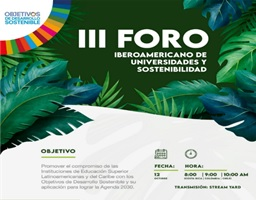
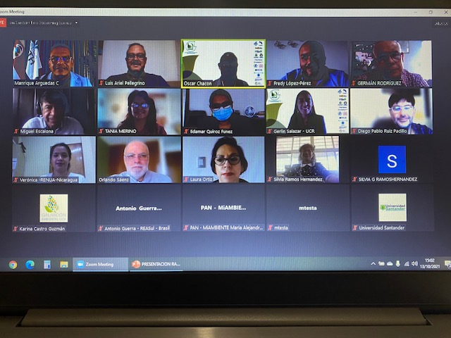
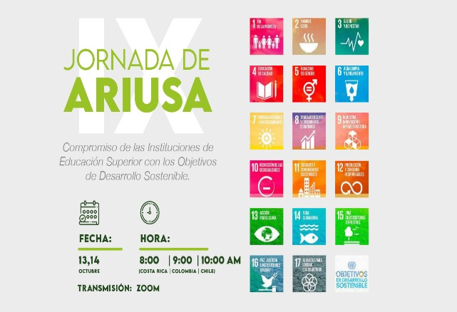
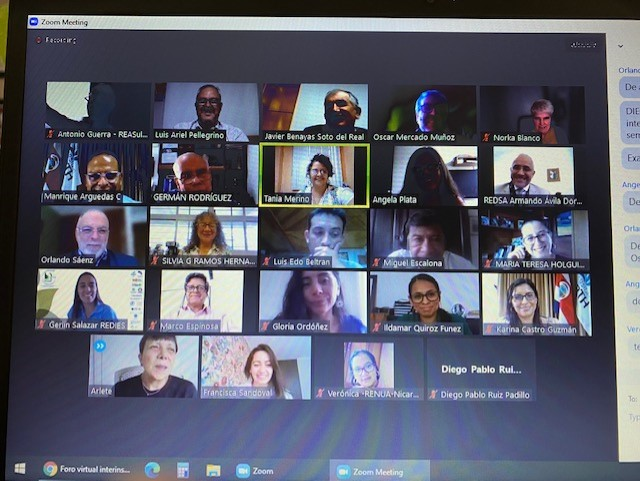

El Foro se realizó el martes 12 de octubre de manera virtual y abierto al público en general, fue organizado por el Programa de Naciones Unidas para el Medio Ambiente (PNUMA), La Alianza de Redes Iberoamericanas de Universidades para la Sostenibilidad y el Ambiente (ARIUSA) y la Red Costarricense de Instituciones Educativas Sostenibles (REDIES).
Con el objetivo de promover el compromiso de las Instituciones de Educación Superior Latinoamericanas y del Caribe con los Objetivos de Desarrollo Sostenible y su aplicación para lograr la Agenda 2030.
Contó con destacados invitados de PNUMA, Red de Formación Ambiental para América Latina y el Caribe y UNESCO.
Tuvimos la posibilidad de conocer los proyectos de ARIUSA entorno a los Objetivos de Desarrollo Sostenible, la presentación de la campaña Race to Zero con un video conmemorativo de las firmas de las instituciones adheridas al compromiso de descarbonización; además de contar con destacados invitados de PNUMA y UNESCO.
|  |  |
Los días 13 y 14 de octubre de 2021 se realizó de manera virtual una nueva Jornada de la Alianzas de Redes Iberoamericanas de Universidades para la Sostenibilidad y el Ambiente (ARIUSA), organizada por la Universidad EARTH y la Red Costarricense de Instituciones Educativas Sostenibles (REDIES).
Será la novena versión de esta serie de eventos, el primero de los cuales se realizó el 18 y 19 de marzo de 2010 y tuvo como sede la Universidad Nacional del Nordeste en la ciudad de Corrientes (Argentina). En esa primera Jornada de ARIUSA se aprobó el documento sobre "Principios y Organización" de ARIUSA.
El primer día de la IX Jornada de ARIUSA estuvo dedicado a la presentación de los informes de actividades por parte de los Coordinadores de las Redes en ARIUSA. En total, esta Alianza cuenta con 26 redes universitarias ambientales que agrupan a más de 440 instituciones de educación superior en 20 países de Iberoamérica.
El objetivo de esta IX Jornada es "Presentar las experiencias ambientales que las redes de las Instituciones de Educación Superior de Iberoamérica han implementado en la incorporación de los Objetivos de Desarrollo Sostenible, la educación ambiental y otras buenas prácticas".
Representantes de redes de instituciones de educación superior adheridas a ARIUSA expusieron informes anuales del estado de la educación superior y la sostenibilidad en base a los Objetivos de Desarrollo Sostenible, fue un espacio con oportunidad de intercambio de conocimientos y sinergias entre los Ministerios de Ambiente de la región y representantes de redes universitarias nacionales.
ARIUSA cuenta con la participación en su alianza, de la Red Argentina de Universidades por la Sustentabilidad y el Ambiente (RAUSA), que estuvo representada por su Coordinador Ejecutivo Mgter. Prof. Luis Ariel Pellegrino de la Universidad Nacional del Nordeste (UNNE), quien realizó una exposición donde comentó: qué es RAUSA, cuando se fundó, que universidades argentinas la componen, sus objetivos y líneas de acción, y finalmente un informe de todas las acciones que llevó adelante la Red en relación con el trabajo con los ODS 2030, con respecto a actividades de formación, investigación, divulgación, publicación y alianzas.
En la sesión virtual de trabajo del jueves 14 de octubre sólo participaron los Coordinadores de las Redes en ARIUSA y algunos invitados especiales. Además de los informes del Comité de Gestión, se elegirán sus nuevos integrantes y se acordará el plan de trabajo de esta Alianza de Redes Iberoamericanas para el 2022.
|  |  |
-Participar en la Conferencia Mundial de Educación Superior (Barcelona Marzo/22), con la temática de los ODS en Iberoamérica. https://www.iesalc.unesco.org/2021/08/02/mayo2022-iii-conferencia-mundial-de-educacion-superior-whec/
-Que todas las redes participen del Observatorio de la Sustentabilidad en la Educación Superior de América Latina y el Caribe (OSES-ALC). https://oses-alc.net/
-Compromiso de asumir ideas de trabajo como Empujones verdes. https://www.unep.org/es/resources/publicaciones/el-pequeno-libro-de-los-empujones-verdes
-Las iniciativas individuales que surjan en las redes, hacerlas generales, en lo que respecta a ODS, Cambio Climático y Riesgos naturales.